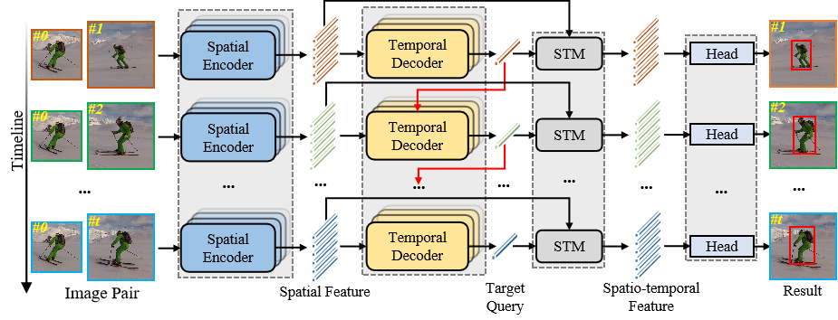

Explicit Visual Prompts for Visual Object Tracking Liangtao Shi; Bineng Zhong#; Qihua Liang; Ning Li; Shengping Zhang; Xianxian Li
in AAAI, 2024 [Paper][BibTex]
EVPTrack is a simple and high performance tracker. It achieves SOTA performance on multiple benchmarks by utilizing spatio-temporal and multi-scale template information.

Autoregressive Queries for Adaptive Tracking with Spatio-Temporal Transformers
Jinxie Xie; Bineng Zhong#; Zhiyi Mo; Shengping Zhang; Liangtao Shi; Shuxiang Song; Rongrong Ji
in CVPR, 2024 [Paper][BibTex]
AQATrack is a simple, high-performance autoregressive query-based spatio-temporal tracker for adaptive learning the instantaneous target appearance changes in a sliding window fashion. Without any additional upadate strategy, AQATrack achieves SOTA performance on multiple benchmarks.
Review Services
Conference Reviewer
Chinese Conference on Pattern Recognition and Computer Vision (PRCV), 2022,2023